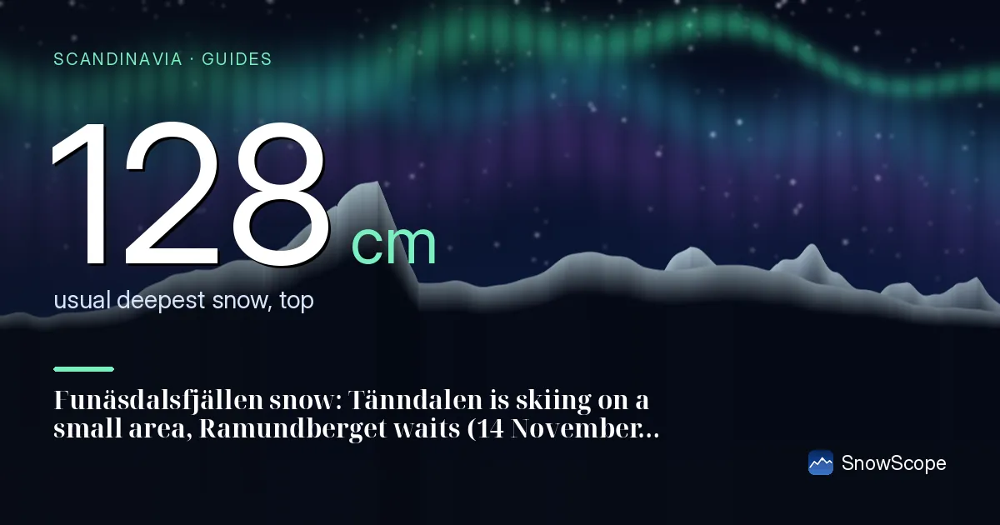

Funäsdalsfjällen snow: Tänndalen is skiing on a small area, Ramundberget waits (14 November 2026)
The first snow of the winter has arrived in Funäsdalsfjällen. Tänndalen, already open on a small prepared area since late October, now has fresh cover across its slopes. The valley station Ljusnedal measured 7 cm on 13 November, and the forecast promises another 8 to 9 cm by the end of the week.
See the live snow forecast for Tänndalen in the SnowScope appSnow depth, powder alerts and the 3D map, free.

What the weather station shows
Ljusnedal, at 585 m and 19 km from Tänndalen, saw bare ground until 10 November. Then 2 cm fell on the 11th, 6 cm on the 12th, and by the morning of 13 November the depth was 7 cm. This was one event: a storm that swept across the whole region in two days.
Tänndalen's base sits at 757 m, so the slopes themselves are higher and likely hold a few centimetres more than the station. The prepared runs where you can ski today are even higher, in the colder zone above 800 m.

Snow already on the mountains
Over the past seven days, about 7 to 8 cm has accumulated across the region. That is the fresh fall that turned the bare slopes white last week. At Ramundberget, 19 km further north, the same storm left about 7 cm by 13 November.
Both resorts sit in a zone where November is usually thin: the median depth at Tänndalen's top on this date in past winters was 29 cm, but that includes deep years and shallow ones. Today you are well below that, but the cover is now continuous—stones are hidden on the prepared runs.
What comes next
The forecast for the seven days ahead shows about 9 cm at the top of Tänndalen and 8 cm at Ramundberget. Other sources suggest a wider range: 11 to 22 cm at Tänndalen's top. The snow line will stay around 360 to 370 m, so rain is not a concern at the ski heights.
By 15 December, if the season follows the median pattern, Tänndalen should have around 58 cm at the top and 27 cm at the base. That is two months away, but the trend from November onward is upward; January, February and March are the deep months here.
The long-term picture
Tänndalen's record over 46 winters shows a slow shift. The middle peak at the top was 134 cm in the first 15 winters on file but fell to 115 cm in the most recent 15. Even so, the top of the mountain stays white for about 224 days in a typical winter—longer than most Nordic resorts. The base, at 757 m, is marginal for natural snow; in the first half of this period it averaged a peak of 70 cm, but the latest 15 winters peak at only 61 cm.
Ramundberget shows a similar pattern and a similar decline: from 136 cm at the top in early winters to 114 cm recently. Both resorts rely on snowmaking at the base in lean years.
When to visit
Tänndalen is open now on a small area, mostly at weekends, with more runs opening as snow allows. The resort opened on 24 October and has been holding a skeleton operation since then. Ramundberget does not open until 19 December, so it will stay closed for another five weeks.
Early-season skiing here attracts groups training for winter sports; the prepared area is small and can feel busy on public days. Hedeviken, the lower valley station, measured 8 cm on 13 November, so the snow line is well above the valleys—travel to the mountains should be safe.
Tips for skiers
- Tänndalen's public skiing area is open on weekends in November; check the resort website for the exact times and which lifts are running each day.
- Bring skis or a board you do not mind damaging. Early-season snow over rocks and rough ground is thin outside the groomed runs, and hidden stones are a risk.
- The high passes, especially Flatruet, can close quickly in wind or fresh snow. Check road status before driving to the resort.
- The base station is marginal for snow in this warming climate, so early visits depend on the prepared runs. Aim for the mid and upper slopes where natural cover is deeper.
- Before going off-piste, check the latest avalanche bulletin from Lavinprognoser (Naturvårdsverket) at lavinprognoser.se. Early season snow on steep terrain can be unstable.
About these numbers
Resort snow depths are the deepest snow on the resort's upper slopes on the date shown; they are estimates for an area, not a measurement at one point. Forecasts can change. Always read the official avalanche bulletin before going off-piste.
Official avalanche bulletins: Lavinprognoser (Naturvårdsverket)
Cite this report
For research, teaching or the press: the numbers and charts are free to reuse under CC BY 4.0 with this citation.
SnowScope (2026), Funäsdalsfjällen snow: Tänndalen is skiing on a small area, Ramundberget waits (14 November 2026), https://snowscope.app/blog/en/2026/11/funasdalsfjallen-tanndalen-ramundberget-snow-14-november-2026.html, accessed 2026-11-14
SnowScope (Atlas Labs). (2026, November 14). Funäsdalsfjällen snow: Tänndalen is skiing on a small area, Ramundberget waits (14 November 2026). SnowScope snow reports. https://snowscope.app/blog/en/2026/11/funasdalsfjallen-tanndalen-ramundberget-snow-14-november-2026.html
BibTeX
@misc{snowscope2026funasdalsfjallentanndale,
author = {{SnowScope (Atlas Labs)}},
title = {Funäsdalsfjällen snow: Tänndalen is skiing on a small area, Ramundberget waits (14 November 2026)},
year = {2026},
month = nov,
howpublished = {\url{https://snowscope.app/blog/en/2026/11/funasdalsfjallen-tanndalen-ramundberget-snow-14-november-2026.html}},
note = {Published 2026-11-14 19:59 UTC; accessed 2026-11-14}
}· CC BY 4.0 · Methods, data and tools →
Tänndalen: snow and temperature by height, this winter vs last (tools) →
Follow Tänndalen
Free: a message when fresh snow is coming, and the forecast every morning.
More snow reports

Oulu's first snow cover of winter arrived on 13 November: 7 cm at the city station, above the usual 2 cm for this date. Forecast: 2–3 cm more by Saturday.

Jämtland's first solid snow cover arrived this week: 19 to 33 cm measured at stations around Storsjön on 13 November. No thaw expected.